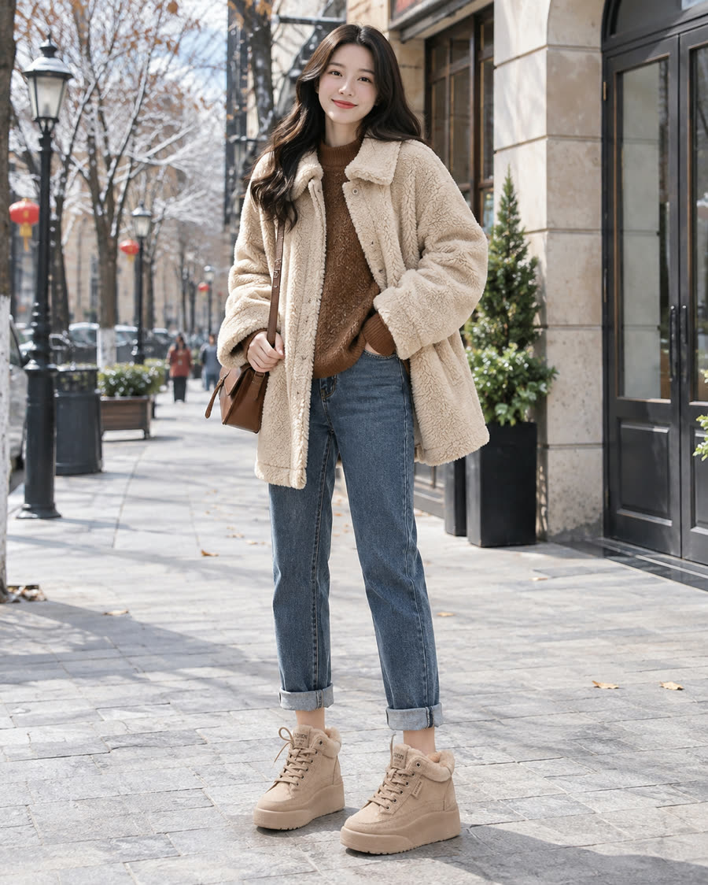

Giày độn đế 5cm lót lông cừu ấm chân — Review high-top JB111A
Không phải ai cũng muốn cao vống lên — nhiều nàng chỉ cần nhẹ nhàng 5cm cho dáng xinh hơn mà đi cực tự nhiên. JB111A đúng gu đó, lại cộng thêm lớp lông cừu Mông Cổ thật giữ ấm chân mùa đông. Hãy soi thật kỹ mẫu giày này.


5cm được chia như thế nào?
Đây là mẫu Jebee công khai số liệu cấu tạo rõ nhất. Tổng chiều cao tăng thêm 5cm được chia chính xác:
- 3,5cm đế ngoài — phần đế siêu mềm, nhìn vẫn mỏng gọn tự nhiên.
- 1,5cm lớp lót ẩn bên trong — nâng gót êm ái, kín đáo.
Ngoài ra cổ giày cao 5,5cm, chu vi cổ 27cm — ôm cổ chân vừa vặn, chắn gió tốt. Đây là mức độn thấp nhất, nhẹ nhàng nhất trong dòng giày độn, dành cho ai thích thoải mái tuyệt đối.


Ảnh thật JB111A: (trái) cắt lớp đúng số liệu 3,5cm + 1,5cm = 5cm · (phải) hai màu nâu nhạt & nâu đậm.
Ấm cỡ nào, đi mùa nào?
Điểm “ăn tiền” của JB111A là lớp lông cừu Mông Cổ thật lót kín bên trong — giữ ấm chân vượt trội, đúng chất giày mùa đông. Form cổ cao ôm cổ chân chắn gió, đi ngoài trời lạnh vẫn ấm áp. Đế siêu mềm, êm nhẹ nên dù đi cả ngày bàn chân vẫn dễ chịu.

JB111A bản nâu nhạt: cao thêm 5cm mà nhìn chỉ như một đôi high-top ấm áp bình thường.
Giày độn 5cm hợp với ai?
- Nàng thích thoải mái, không muốn cao quá — 5cm vừa đủ đẹp dáng mà đi cực tự nhiên.
- Người đi làm, đi cả ngày cần đôi giày êm, ấm, không gượng chân.
- Bạn lần đầu đi giày độn — 5cm là mức dễ làm quen nhất, gần như không có cảm giác “đang độn”.
Phối đồ với high-top lông cừu 5cm
- Quần jean ống đứng + áo len oversize — ấm áp, tông nâu của giày rất “mùa đông”.
- Legging + áo khoác phao dáng dài — gọn gàng, giữ ấm trọn bộ.
- Chân váy len + tất cao — nữ tính mà vẫn ấm, cổ giày cao đỡ lạnh cổ chân.
Phân vân chọn độ cao? Đọc thêm: nên chọn giày độn 7cm hay 11–13cm?
Thông số nhanh mẫu JB111A
| Tiêu chí | JB111A | Ghi chú |
|---|---|---|
| Tăng chiều cao | 5cm | 3,5cm đế ngoài + 1,5cm lót ẩn |
| Cổ giày | Cao 5,5cm | Chu vi cổ 27cm, ôm cổ chân |
| Giữ ấm | Lông cừu Mông Cổ thật | Lót kín trong, hợp mùa đông |
| Phiên bản màu | 2 màu | Nâu nhạt · nâu đậm |
Câu hỏi thường gặp
Giày độn đế 5cm JB111A cấu tạo ra sao?
Cao tổng 5cm: đế ngoài 3,5cm + lót ẩn 1,5cm. Cổ giày cao 5,5cm, chu vi cổ 27cm, lót lông cừu Mông Cổ thật.
Giày độn 5cm có đủ tôn dáng không?
5cm là mức nhẹ nhàng, vừa đủ cải thiện dáng mà đi cực tự nhiên — hợp người thích thoải mái hoặc lần đầu đi giày độn. Xem thêm: giày độn đế có đau chân không?
JB111A có màu nào, giá bao nhiêu?
JB111A có bản nâu nhạt và nâu đậm. Giá và size còn hàng xem trực tiếp tại trang mẫu JB111A hoặc nhắn Zalo để được tư vấn nhanh.
Muốn một đôi vừa ấm vừa cao nhẹ 5cm cho mùa đông?
Nhắn Jebee size chân & chiều cao mong muốn — tụi mình tư vấn mẫu JB111A (hoặc mẫu hợp hơn) trong 1 phút, freeship toàn quốc, đổi size miễn phí 15 ngày.
Nhắn Zalo tư vấn Xem mẫu JB111A